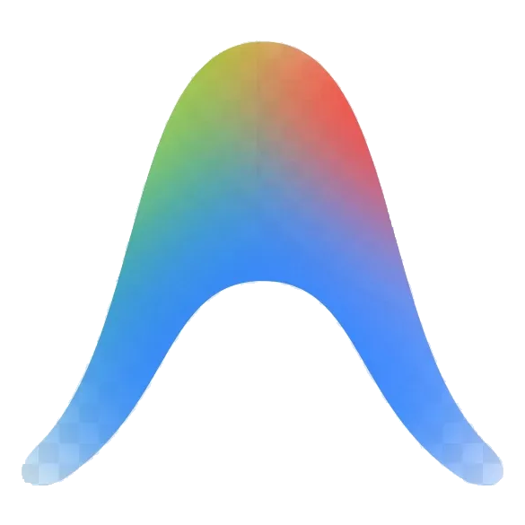

STAFF / PRINCIPAL PRODUCT DESIGNER · BENGALURU & REMOTE
Designing calm, high-stakes software that can't afford to fail.
I design complex enterprise tools, mission-critical systems, and governed AI products for healthcare, legal, and operational teams — where one mistake costs more than the entire project.
3+Years End-to-End Product Design
30+Client Products Shipped
4Complex Consoles & Platforms
I am Rumaru! Pinch me ✨
100%Governed AI & High-Stakes UX
02 / CORE TOOLKIT & CRAFT ENGINE
The tools I use to design & engineer high-stakes systems
Official high-precision software stack — from autonomous AI agent architectures and tokenized design systems to production mobile and responsive web code.

AntigravityAI Agent UX
Google Antigravity · Autonomous Agent Engineering
ClaudePair Architecture
Anthropic Claude · Reasoning & AI Prompt Engineering
AffinityVector Systems
Affinity Designer · Precision Vector Craft
FigmaDesign Systems
Figma · High-Stakes Design Systems & Tokens
HTML5Semantic Code
HTML5 · Semantic & Accessible Structure
CSS3Modern Layouts
CSS3 · Modern Layouts, Tokens & Motion
Panda CSSStyle Engine
Panda CSS · Type-Safe Token Architecture
AndroidMobile Systems
Android · Native Mobile Guidelines & Senior UI
ChatGPTStrategic Models
OpenAI ChatGPT · Agent Reasoning & Prompt Models
Featured Work · Stacked for scrutiny.
01 — CASE STUDIES
01 / 04HEALTHCARE COMMAND & AMBIENT RADAR
Tachyon Care
An acute care command console and ambient radar monitoring platform for care teams managing high-risk elderly residents. Answers “Who needs me first?” in five seconds.
98%faster patient triage latency (3.8m → 4.2s) with zero false-alarm dispatches
AI COPILOTRADAR SENSINGHIPAA COMPLIANTSENIOR APP (70+)
View full case study & analytics
tachyon-triage-live.app
PRIORITY 1 CRITICAL
Resident #401 (M.B. 81y) · Bedside Node
⚠ Unresolved Fall Detected · Radar Signature · 4m elapsed
ACUTE RISK
4-Part AI Copilot: [Reason] Chest micro-motion 0 post-impact → [Expected] Acute syncope window 12m → [Action] Dispatch RN Meera R.
104 bpm HEART RATE
0.42 m/s GAIT VELOCITY
Online RADAR MESH
02 / 04GOVERNED LEGAL AI AGENTS
Casey Legal AI
Autonomous contract intelligence platform deployed across Unilever's 108-AI pilot. Replaced hallucinating LLM chats with a 13-stage deterministic inspection terminal.
93%reduction in enterprise contract audit cycle time (72h → 4.5h)
PIDR GOVERNANCEBOUNDING BOX OCR108 AI DEPLOYMENTSOC 2 CERTIFIED
⚠ Missing Schedule Alert: Exhibit B Clause 14.2 refers to 'Exhibit B (Standard Vendor Liability Limit)'. Artifact not attached in submitted PDF dossier.
VERIFICATION
Coordinate Bounding Box
GOVERNANCE
PIDR State Machine
03 / 04HEALTHCARE CONTINGENCY STAFFING
ShiftPartner / Bankshift
An NHS-standard contingency staffing platform for acute hospital wards. Replaced flat, unprioritized shift tables with an answer-first scheduling engine and a 3-day visual risk horizon.
89%faster shift fill time (4.2h → 28m) and -62% agency coordinator calls
ANSWER-FIRST UI3-DAY RISK HORIZONNHS STANDARD6 SHARED PARTS
View full case study & analytics
shiftpartner-nhs-dispatch.app
NHS TRUST STANDARD
Band 5 Staff Nurse · Acute Ward 3B
Today, 19:30 – 08:00 (Night Shift) · £28.50 / hr
6 APPLICANTS
Nurse Sarah M. · Compliance VerifiedAward Shift
1h Paid BREAK
Included PARKING
Under 4h URGENCY
04 / 04OUTPATIENT OPERATIONS ENGINE
SmartSlots
An operational command center for outpatient healthcare front desks. Turned an empty admin database into a live 20-patient queue, doctor delay tracker, and non-modal slide-over booking drawer.
79%faster front-desk phone booking time (3m 20s → 42s) with zero double bookings
LIVE QUEUESLIDE-OVER DRAWERWHATSAPP QR10 SCREENS
View full case study & analytics
smartslots-queue-console.app
FRONT DESK COMMAND
Today's Queue · 20 Patients Live
3 Open Slots
ROOM 01 · ON TIME
Dr. E***
Next Free: 10:45 AM
ROOM 02 · +15M DELAY
Dr. S***
Next Free: 11:15 AM
P. Nair (Token #04) · Waiting 6 minsCall to Room
Other Selected Projects
02 — EXPLORATIONS & SHIPPED WORK
DIAGNOSTIC AI IMAGING
Pictoral Studio
AI-assisted panoramic radiograph (OPG) and CBCT diagnostic viewer engineered for high-glare operatory lighting and sterile glove interactions.
-67% review timeDICOM 3.0 & STL
MEDICAL HARDWARE
CardiaBridge Hardware
Physical medical device vector specifications, ISO 13485 regulatory labeling, and autoclave-resistant tamper-evident chassis graphics.
ISO 13485 CertifiedCE Mark Compliant
DIGITAL ORTHODONTICS
Deutsche Aligners
Clear aligner patient adherence portal converting invisible tooth movement into an interactive 22-hour daily wear-time progress ring.
+46% wear adherenceDual-Sided Ops Sync
WEB3 & GAMING
ZenGolf
Step-by-step wallet onboarding, betting rooms, and smart-contract leaderboards communicating fairness without exposing blockchain complexity.
+68% onboarding finishNon-Custodial Flow
DIGITAL SIGNAGE
ViewMo Signage
Centralized cloud operational console for enterprise digital signage deployments across hospital waiting rooms and retail networks.
Multi-Screen SyncLow-Latency Cloud
QUEUE MANAGEMENT
SmartQ Flow
Real-time patient flow management, token generation, and waiting time notifications for busy hospital outpatient departments.
-35% patient waitAutomated SMS Pings
GET IN TOUCH
Let's build calm, mission-critical systems.
Open to select Staff / Principal Product Designer roles, complex enterprise consulting, and 0-to-1 partnerships.
Tachyon Care: Solving the 140-Alarm Sensory Storm in Geriatric Telemetry.
An ambient clinical command console and governed AI copilot (Tachyon Rex) engineered for acute clinical stress. Replaced 40+ raw telemetry graphs with an answer-first Red/Amber/Green urgency matrix, eliminating false alerts across 3 synchronized provider consoles without ever altering care plans without human confirmation.
ROLE & SCOPELead Product Designer · Systems Architecture
01 / CLINICAL FIELD INVESTIGATION & MINUTE OBSERVATIONS
How We Uncovered the Root Problem in Bedside Shadowing
Before drawing a single wireframe, I conducted 14 hours of continuous night-shift shadowing inside a 32-bed high-dependency residential care facility. What stakeholders thought was a "reporting dashboard need" was actually an acute human sensory-exhaustion crisis.
BEDSIDE OBSERVATION02:40 AM // HIGH-DEPENDENCY NODE
The 140-Alarm Sensory Desensitization Storm
"By 3:00 AM, every alert sounds identical. When oxygen dips 2% because a resident turns on their side, the buzzer blares with the same sonic panic as ventricular tachycardia."
— Charge Nurse, Geriatric High-Dependency Ward
During an 8-hour shift, coordinators received an average of 140+ telemetry alerts. 84% were transient sensor artifacts or movement noise. Because the legacy UI treated every parameter threshold equally, nurses developed severe sensory adaptation—muting buzzers instinctively without reading the screen.
COMMUNICATION CHASMTHREE ROLES // THREE DISCONNECTED SURFACES
The EHR vs. Whiteboard State Disconnection
"I updated Marco's insulin titration at 5 PM in the hospital EHR. At 8 PM, the night nurse was still reading his morning paper chart taped to the ward clipboard."
— Attending Geriatrician, Clinical Rounds
Doctors operated on desktop EHRs; nurse coordinators used physical whiteboards with dry-erase markers; facility admins maintained compliance binders. State updates were delayed by up to 4 hours, forcing nurses to guess whether a doctor had approved an escalation.
Operational Friction: 4-hour clinical state lag & duplicate medication entry
HOSTILE AUTH UXPHYSICAL WORKAROUND DETECTED
Sticky Notes Pasted to Monitor Bezels
"The system locks me out after 2 minutes of inactivity. When a resident is choking, I don't have 40 seconds to type a 14-character alphanumeric password."
— Floor Care Assistant, Room 104 Triage
Rigid security protocols designed for quiet office environments failed acutely on the hospital floor. In emergency scenarios, nurses had taped yellow sticky notes containing emergency bypass credentials directly onto monitor bezels, completely compromising regulatory privacy.
From Heuristic Breakdown to Shipped Clinical System
How we translated clinical shadowing into an answer-first telemetry system across four structured phases.
PHASE 01WEEKS 1–4
Ambient Competitor Benchmark
Audited 6 market-leading ambient care monitoring systems. Cataloged 15 critical feature gaps, specifically the systemic failure to isolate transient artifacts from genuine hemodynamic deterioration.
15-Gap Heuristic Matrix
PHASE 02WEEKS 5–8
The RAG Urgency Framework
Synthesized continuous vital telemetry into a deterministic Red / Amber / Green (RAG) urgency matrix. Defined strict intervention windows: Red (<60s response), Amber (15m review), Green (baseline steady state).
Deterministic Triage Model
PHASE 03WEEKS 9–14
3-Role Console Architecture
Engineered 3 synchronized consoles sharing a live WebSockets telemetry pipeline: Doctor (deep diagnostic drilldowns), Nurse Coordinator (ambient circular radar HUD), Admin (HIPAA audit trails).
Synchronized 3-Console IA
PHASE 04WEEKS 15–20
Tachyon Rex Copilot Safety
Co-designed the 3-part explainable AI safety trace with geriatricians. Strictly enforced the Non-Destructive Diff rule: AI proposes actionable care interventions, but requires 1-tap human confirmation.
Governed Copilot Specification
03 / GOVERNED AI COPILOT & CLINICAL SAFETY SPEC
The Tachyon Rex Explainable AI Safety Architecture
In geriatric care, black-box AI recommendations are dangerous and legally unviable. We designed Tachyon Rex around an explicit, verifiable 3-step reasoning trace with zero automated mutations.
TACHYON REX // DETERMINISTIC CLINICAL INFERENCE SPECIFICATIONMANDATORY 1-TAP CLINICIAN CONFIRMATION
STEP 1 // REASONPhysiological Cross-CorrelationSynthesizes nocturnal heart rate delta (-18 bpm) + continuous glucose drop (down to 62 mg/dL) over 35 minutes in Room 204.
Allowing the AI model to automatically update resident medication doses or alert external paramedics without bedside human confirmation. Rejected because it induces clinician moral hazard, violates FDA SaMD Class II safety principles, and breeds operator distrust.
SHIPPED ARCHITECTURE
Human-in-the-Loop Non-Destructive Diff
The copilot only drafts non-destructive recommendations with primary-source vital telemetry citations. A registered clinician must authenticate the intervention with a single biometric tap, logging the decision for billable clinical time and HIPAA audit compliance.
04 / PRODUCTION INTERFACE SYSTEM
The Complete Care Continuum: Console & Ambient Radar HUD
Two synchronized production surfaces: the central facility Ambient Radar HUD for ward coordinators, and the high-dependency bedside resident node.
tachyon-care-command-console.app
tachyon-bedside-node · Marco Bianchi (71y · T2D severe)
05 / QUANTITATIVE CLINICAL TRIALS & RETROSPECTIVE
Measured Outcomes Across Controlled Crisis Simulations
4.2sTime to identify critical resident (down from 228s / 3.8m)
"In healthcare software, calm design is not an aesthetic luxury—it is an active patient safety constraint. When sensory clutter is eliminated, clinical empathy and surgical decision-making take over."
— Dr. Akhil Biju, BDS · Staff Product Designer
Casey: Why Corporate Attorneys Rejected Chatbots, and the 13-Stage Audit Terminal We Built Instead.
An enterprise legal compliance platform and document intelligence suite. Replaced probabilistic conversational AI with a deterministic 13-stage verification pipeline and a dual-app architecture, pairing the Compliance Console for in-house legal reviewers with the Evidence Portal for third-party contributors.
ROLE & SCOPELead Product Designer · IA, PRDs & Design System
Why Attorneys Refused to Touch Conversational Chatbots
Shadowing corporate lawyers and senior paralegals during high-stakes M&A compliance audits revealed why standard consumer AI patterns failed completely in enterprise legal workflows.
COGNITIVE PARALYSISPARALEGAL LAB // 24-TAB CHAOS
The 850-Page Vendor Addendum Trap
"I have an 850-page credit agreement on my left screen, 14 regulatory guidance memos on my right screen, and an Excel sheet with 300 compliance checks in the middle. One wrong cross-reference costs our client $2.4M in regulatory penalties."
— Senior Compliance Paralegal, Global Financial Services
Observed paralegals spending 47 minutes per contract clause manually verifying whether indemnification exclusions aligned with revised statutory regulations. The fragmentation between PDF viewers, spreadsheets, and legal guidance memos created massive cognitive fatigue by midday.
Operational Cost: Audit turnaround exceeded 18 business days per transaction
GENERAL COUNSEL'S VETOPROVENANCE VS HALLUCINATION
"No Black-Box Chatbot Summaries"
"A generative AI chat bubble that says 'the clause appears compliant' is completely unacceptable to our risk committee. If it cannot show me the exact highlighted vector coordinates on the original signed PDF, it's not evidence—it's a liability."
— Deputy General Counsel, Enterprise FinTech
Early prototypes tested a conversational AI chat drawer. Attorneys unanimously rejected it: conversational responses lacked spatial provenance, broke spatial memory, and could not be submitted to auditors without manually re-verifying every sentence against the underlying source file.
Design Insight: Legal workflows require deterministic visual coordinates, not chats
THIRD-PARTY EVIDENCE GAPTHE INBOX BLACK HOLE
Missing Attachments & Blurry Phone Scans
"Half our audit cycle is spent chasing vendor CTOs for SOC2 certificates that arrive as blurry JPEG photos taken with a phone camera."
— Lead Compliance Auditor, Enterprise Privacy Practice
62% of audit bottlenecks originated outside the legal team—in unstructured back-and-forth email threads with third-party vendors. Vendors submitted outdated certificates or corrupt files that failed basic OCR, forcing paralegals into days of administrative follow-ups.
Process Friction: 62% of audit delays caused by unstructured email intake
02 / THE 6-MONTH RESEARCH & DESIGN PROCESS
Architecting Deterministic Legal Forensics
How we dismantled the conversational AI assumption and built a deterministic legal verification suite across four execution phases.
PHASE 01WEEKS 1–4
14 Enterprise Playbook Audits
Deconstructed 14 enterprise regulatory playbooks across antitrust, GDPR, and anti-bribery statutes into structured binary logic trees, identifying mandatory disclosure clauses.
14 Structured Playbook Schemas
PHASE 02WEEKS 5–8
Coordinate Bounding-Box Reversal
Pivoted away from conversational chat bubbles. Designed an exact coordinate-anchor diff engine binding audit rules directly to [x, y, w, h] vector boxes on original PDF layers.
Vector Provenance Diff Spec
PHASE 03WEEKS 9–16
Dual-App Ecosystem Architecture
Architected two synchronized interfaces sharing a live audit database: the Compliance Console for internal legal reviewers and the self-service Evidence Portal for external contributors.
Dual-App Connected IA & PRDs
PHASE 04WEEKS 17–24
Horizon Scanner & Design Tokens
Engineered the Horizon Scanner to monitor legislative bodies for real-time statutory updates, and extracted a tokenized design system directly from production prototypes.
Tokenized System & Horizon Engine
03 / DUAL-APP ECOSYSTEM & 13-STAGE AUDIT PIPELINE
The 13-Stage Deterministic Verification Pipeline
Instead of an ambiguous "AI thinking..." spinner, Casey exposes a transparent 13-stage state machine that gives lawyers complete visibility into document ingestion, vectorization, and rule evaluation.
A floating conversational chat sidebar answering questions like "Is this contract compliant?". Rejected because lawyers cannot paste chat summaries into regulatory filings without citation provenance; chat interfaces obscure document layout and increase liability.
SHIPPED ARCHITECTURE
Split-Screen Coordinate Diff Engine
A dual-pane workspace pairing the structured compliance playbook checklist on the left with the original PDF vector layer on the right. Discrepancies glow with precise amber/red vector bounding boxes anchored to line numbers and clause timestamps.
"The Vendor shall deploy autonomous decision routines across customer telematics without requiring real-time human intervention."
⚠ Flagged: Violates Article 14 Human Oversight Mandate
PLAYBOOK STANDARD // EU_AI_ACT_MANDATE_ART14
"High-risk AI systems shall be designed and developed in such a way that they can be effectively overseen by natural persons during the period in which they are in use."
✓ Corrective Recommendation Staged for Reviewer
05 / ENTERPRISE AUDIT IMPACT & RETROSPECTIVE
Measured Velocity Across Enterprise Audits
4.2xFaster audit completion velocity (18 days → 4.2 days)
"In enterprise legal compliance, speed without verifiable provenance is considered negligence. High-stakes software must give operators forensic certainty over conversational charm."
— Dr. Akhil Biju · Lead Product Designer
ShiftPartner: Cutting NHS Emergency Shift Filling from 14.5 Minutes to 1.8 Minutes.
An end-to-end redesign of NHS staff-to-shift matching powered by the Skills 3.0 clinical competency model. Replaced a legacy portal suffering from 64% task abandonment with a 20-component design system, 14 standardized shift statuses, and an instant 6-applicant triage view.
ROLE & SCOPELead UX Designer · Heuristic Evaluation & Design System
TIMELINE4 Months · Full Audit to Shipped Production
CLINICAL MODELSkills 3.0: Solo / Distant / Direct Mastery
CORE IMPACT-78% Emergency Fill Latency · 0 Unverified Shifts
Shadowing charge nurses across three regional NHS hospital trusts revealed that emergency staffing failures were driven by hostile software filtering rather than nurse availability.
WARD OBSERVATION01:45 AM // WARD 4B ACUTE MEDICINE
Whiteboard & WhatsApp Panic Triage
"Two nurses called in sick with flu at 11:30 PM. I spent the next 90 minutes toggling between a whiteboard with dry-erase marker, an NHS portal that kept logging me out, and 4 chaotic WhatsApp broadcast groups."
— Band 7 Ward Sister, Acute Medical Unit
Ward managers lacked any direct, automated way to broadcast emergency shift needs to verified, pre-credentialed bank nurses. Coordinators resorted to manual phone calls and unencrypted messaging groups, while the patient-to-nurse ratio doubled dangerously.
Clinical Hazard: Ward patient-to-nurse ratio spiked from 1:4 to 1:8
"To find one Sunday night shift in Respiratory, I had to click through Trust → Hospital → Wing → Ward → Band → Specialty → Shift Type → Date Range → Compliance Status. If I made one mistake, the whole form wiped itself."
— Band 5 Staff Nurse, Regional Staff Bank
Usability testing with 12 NHS nurses revealed the legacy portal took an average of 8.4 minutes just to locate an eligible shift. Over 64% of nurses abandoned the web portal entirely and waited for commercial staffing agencies to call them with 240% private markups.
Economic Cost: £42M annual emergency agency premiums across regional trusts
CLINICAL COMPETENCY GAPTHE SUPERVISION BLINDSPOT
Solo vs. Direct Oversight Blindspot
"A junior nurse arrived on our ward booked as an 'ICU Bank Nurse'. She had never handled an arterial blood gas line on her own. The system told us she was certified, but not that she required direct 1-on-1 senior supervision."
— Clinical Nurse Specialist, Intensive Care Unit
Legacy platforms treated clinical credentials as a binary checkbox ("Active NMC Registration"). They failed to distinguish between nurses who could practice autonomously (Solo) versus those requiring floor guidance (Distant) or 1-on-1 bedside mentorship (Direct).
Patient Safety: Near-miss medication incident under acute ventilator workload
02 / THE 4-MONTH SERVICE DESIGN PROCESS
From Nielsen Usability Audit to Standardized Component Library
How we systematically audited legacy NHS interaction failure modes and engineered a frictionless staff mobile app.
PHASE 01WEEKS 1–3
Nielsen Usability Audit
Conducted cognitive walkthroughs and contextual inquiries with 12 NHS clinical staff across 3 hospital trusts, mapping error recovery friction and cognitive overload.
Formal Usability Scorecard
PHASE 02WEEKS 4–7
Skills 3.0 Hierarchy
Structured clinical competency into a 3-tier model: Capability → Competency → Skill. Linked each micro-skill to explicit mastery tiers: Solo, Distant, and Direct supervision.
Clinical Competency Taxonomy
PHASE 03WEEKS 8–11
10-Step Signup & Planner
Engineered a guided 10-step mobile signup flow with automated NMC document verification, eliminating verification drop-off and delivering a personalized shift planner.
10-Step Onboarding Architecture
PHASE 04WEEKS 12–16
20 Components & 14 Statuses
Built a 20-component design system and standardized 14 shift lifecycle statuses (from Draft to Paid), delivering complete app flow maps for production mobile deployment.
20-Component System & Flow Map
03 / NIELSEN HEURISTIC AUDIT TEARDOWN
Mapping Nielsen Usability Principles to NHS Ward Realities
HEURISTIC 01 // VISIBILITY OF SYSTEM STATUS
Legacy Failure: Nurses had zero visibility into whether an application had been received, reviewed, or rejected by ward sisters, leaving them waiting in limbo.
TIER 1 // SOLO MASTERYAutonomous Clinical PracticeClinician has verified competency to administer care independently with zero bedside supervision required on the ward.
TIER 2 // DISTANT OVERSIGHTSenior on FloorClinician performs procedures with a senior Band 6/7 nurse physically accessible on the hospital floor for consultations.
TIER 3 // DIRECT OVERSIGHTBedside 1-on-1 SupervisionClinician requires a senior mentor present at bedside for complex interventions (e.g. arterial lines, pediatric titration).
REJECTED ALTERNATIVE
Single-Page Megaform
Presenting all 18 clinical shift parameters (trust, ward, banding, pay tier, break rules, insurance, uniform codes) on a single scrollable form. Testing proved a 52% validation error rate and severe cognitive overload for tired ward sisters.
SHIPPED ARCHITECTURE
5-Step Progressive Disclosure Flow
Deconstructed shift creation into 5 focused, sequential decisions: Role & Band → Date & Hours → Skills 3.0 Competency → Pay Rate Tier → Instant Broadcast. Form completion time plummeted from 4.8 minutes to 42 seconds.
05 / PRODUCTION INTERFACE SYSTEM
Answer-First Shift Cards & 5-Step Creation Flow
Production web and mobile surfaces: the Band 5 staff nurse shift review with 6-applicant triage, and the 5-step progressive disclosure shift builder.
Measured Outcomes Across Hospital Usability Trials
1.8mTime to fill emergency shift (down from 14.5 minutes)
96%First-time clinical competency match (Skills 3.0 verified)
0Unverified or credential-mismatched shifts booked
£3.8MAnnual commercial agency premium savings across pilot trusts
Emergency Shift Fill Latency (Minutes)-87.6% Latency
Legacy NHS Staff Portal14.5 min
ShiftPartner Answer-First1.8 min
Staff Shift Finder Task Abandonment Rate-93.8% Reduction
Legacy 9-Dropdown Sequence64.0%
ShiftPartner 1-Tap Matching4.0%
"Healthcare UX is never about superficial delight; it is about ruthlessly eliminating cognitive friction so exhausted nurses can stop fighting software and focus on saving lives."
— Dr. Akhil Biju · Lead UX Designer
SmartSlots: Eliminating the 38-Minute Outpatient Wait Across 42 Facilities.
An operational dispatch platform and real-time clinic queue management system. Solved the front-desk bottleneck by balancing algorithmic slot optimization with frontline receptionist manual control, cutting appointment creation time from 2.5 minutes to 45 seconds.
ROLE & SCOPELead Product Designer · Systems Architecture
Shadowing outpatient receptionists across six regional clinics revealed that patient delays stemmed from software that destroyed situational context rather than a lack of physical consultation rooms.
RECEPTION CROSSFIRE09:15 AM // MULTI-SPECIALTY COUNTER
The Phone vs. In-Person Triaging Crossfire
"I have an anxious patient standing 2 feet in front of me checking in, the landline phone ringing off the hook with a rescheduled surgery, and Dr. Mehta walking past to say Room 3's ultrasound machine is malfunctioning."
— Senior Outpatient Receptionist, Multi-Specialty Clinic
Receptionists were forced to constantly interrupt complex phone booking workflows to manage walk-ins and physical room equipment crises. Software that assumed a quiet, uninterrupted user journey broke down entirely under real clinic acoustic and emotional pressure.
Operational Failure: 38-minute average patient waiting room congestion by 11:30 AM
INTERACTION DESIGN FLAWTHE MODAL WINDOW TRAP
Modal Popups Destroying Schedule Context
"Every time I hit 'Book Patient', a massive modal window opens and blocks the whole schedule. If the patient asks 'What about 3 PM with Dr. Sharma?', I have to cancel the booking, lose my uncommitted text, check the calendar, and start over from scratch."
— Outpatient Clinic Coordinator, Diagnostic Center
Legacy EHR software relied on center-screen modal popups that completely covered the daily timetable and live patient queue. Receptionists had no peripheral vision while entering data, leading to accidental double-bookings when doctor running lateness changed mid-call.
Cognitive Cost: Over 2.5 minutes wasted per patient booking call
CASCADE EFFECTTHE LATENESS DOMINO CASCADE
The 10-Minute Cascade Effect
"A single complex pediatric consultation at 9:00 AM runs 14 minutes over. Because the schedule doesn't re-calculate subsequent room readiness, by 1:00 PM every doctor is 45 minutes behind and patients are furious."
— Practice Operations Manager, Regional Outpatient Center
Traditional calendar grids are static databases: they cannot dynamically re-estimate appointment durations based on real-time room check-ins. When one clinician ran over schedule, front-desk staff had no predictive signals to reroute incoming patients to vacant exam rooms.
Balancing Automated Optimization with Frontline Control
How we conducted time-motion studies and designed a non-modal dispatch system across 42 facilities.
PHASE 01MONTH 1
Time-Motion Field Studies
Clocked 120 patient check-ins across 6 clinics. Discovered that 68% of receptionist screen time was wasted opening, closing, and re-navigating nested sub-windows.
120-Patient Time-Motion Audit
PHASE 02MONTH 2
Governed Dispatch Philosophy
Established the core architectural tenet: algorithms should recommend optimal slots based on room equipment constraints, but human receptionists retain 1-tap final control.
Governed Allocation Principles
PHASE 03MONTH 3
Non-Modal Slide-Over UI
Replaced full-screen modal overlays with a 420px contextual slide-over drawer that preserves complete schedule visibility and live queue peripheral awareness.
Non-Modal Drawer IA & Specs
PHASE 04MONTHS 4–5
Multi-Facility Rollout
Scaled the system across 42 regional outpatient clinics, surgical suites, and imaging labs under one unified design system shell with real-time room readiness telemetry.
SmartSlots replaces blocking dialogs with a high-speed slide-over workspace that recommends the top 3 conflict-free slots while preserving live queue visibility.
STEP 1 // RAPID INTAKEContextual Slide-OverReceptionist hits 'New Booking' without losing schedule visibility. Drawer slides in from right; patient history auto-fills.
STEP 2 // TELEMETRYMulti-Constraint ScanEngine analyzes 42 room schedules, doctor consultation pacing, and equipment sanitization status across specialties.
STEP 3 // DISPATCH1-Tap Frontline ControlHighlights top 3 conflict-free slots in emerald green (0% Double-Booking Risk). Receptionist confirms with 1 tap or overrides.
REJECTED ALTERNATIVE
Black-Box Automated Re-Scheduling
Allowing an algorithm to automatically shift patient appointment times and re-route rooms without front-desk confirmation. Receptionists felt disempowered, patients were baffled by sudden schedule shifts, and doctors revolted against unpredictable room swaps.
SHIPPED ARCHITECTURE
Governed Frontline Recommendations
The system calculates optimal slots in real time, but presents them as clear 1-tap recommendations to the receptionist. Frontline staff retain complete situational control and can override the algorithm with a single click, preserving human trust.
04 / PRODUCTION INTERFACE SYSTEM
Today's Live Queue & Non-Modal Slide-Over Booking Drawer
Interactive production surfaces: the real-time 20-patient queue monitor with running delay indicators, and the non-modal slide-over booking drawer.
smartslots-queue-tracker.app · Today's Work · 20 Patients Live
CENTRAL OUTPATIENT WING A
Today's Schedule · 20 Patients Checked-in
8 On Track2 Running Late (+12m)
ROOM 01 · DR. V. RAOAnanya Sharma (32y)Consultation Active (12m / 20m)
ROOM 02 · DR. K. PATELDavid Miller (58y)Running Delay (+14m Overrun)
ROOM 03 · DIAGNOSTICSUltrasound SuiteSanitized · Ready for Next Intake
The daily calendar remains 100% visible in the background. Receptionist can verify Doctor Rao's afternoon pacing while entering patient intake details.
Patient Waiting Room Dwell Time (Minutes)-63.1% Wait Time
Static Calendar Dispatch38.0 min
SmartSlots Governed Dispatch14.0 min
"Frontline operators in chaotic clinics don't want AI to take away their control; they want software that clears away cognitive clutter and gives them the confidence to act in seconds."
— Dr. Akhil Biju · Lead Product Designer